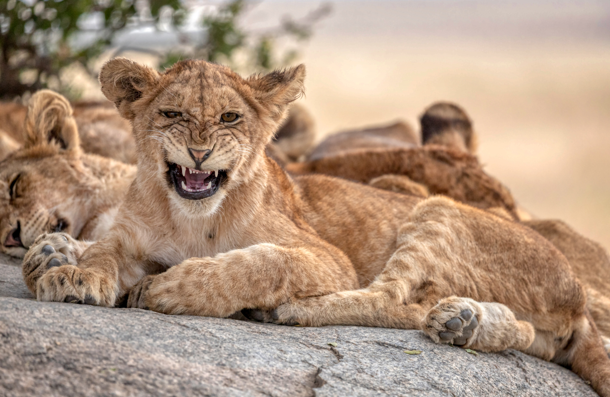
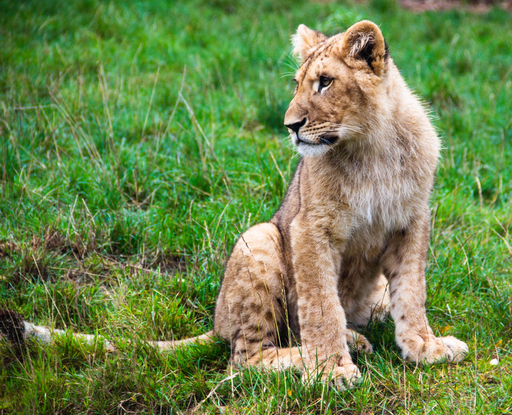
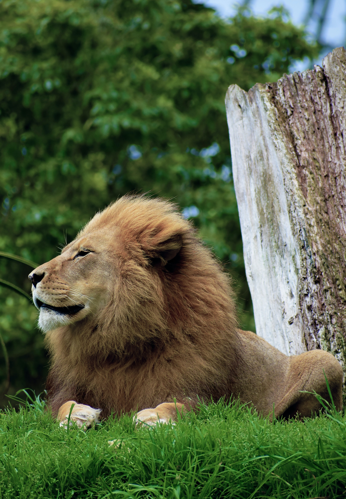

The Lions
-

- 
-

- 
-

- 
Lions
The lion (scientific name: Panthera leo) is a type of carnivorous mammal of the genus Panthera and of the family Felidae. The species is currently found in sub-Saharan Africa and Asia, with a single remaining population in danger, in Gir Forest National Park, Gujarat, India. It was extinct in North Africa and Southwest Asia in historical times, and even the Upper Pleistocene, some 10,000 years ago, was the most widespread large land mammal after humans, found in most of Africa, in much of Eurasia, from Western Europe to India, and in America, from the Yukon to Mexico. It is one of the four big cats, with some males exceeding 250 kilograms in weight, being the second largest recent cat after the tiger.
Lions kid
They reach sexual maturity at the age of four and males at the age of five. They have one to five puppies, and a gestation that lasts 3.5 months. They are born with up to 2 kg, are weaned around 10 months, but are dependent on the group up to 16 months. They are cared for by all the other females in the flock, including they can suckle babies that are not their own.
Lioness
These big cats live in flocks of 5 to 40 individuals, being the only cats with gregarious habits. In a flock, there is a division of tasks: the females are in charge of hunting and caring for the young, while the male is responsible for the demarcation of the territory and for the defense of the group of larger or more numerous animals (against possible attacks by hyenas, buffaloes, elephants and other male lions).
Lions kid
The puppies' eyes only open after 10 days of birth. They can also be breastfed by other females in the group. When they complete 3 months, they start to accompany the mother and the females during the hunt.
Lions
Lions are carnivorous animals and their most common prey are zebras, buffalo, wild boar, antelopes and deer. They are excellent predators and occupy the top of their food chains.
Lions
They reach sexual maturity at four years of age and males at five. They have one to five puppies, and a gestation lasts 3.5 months. They are born weighing up to 2 kg, are weaned at around ten months, but are dependent on the group until they are 16 months old. They are cared for by all the other females in the pack, even they can nurse offspring that are not their own.